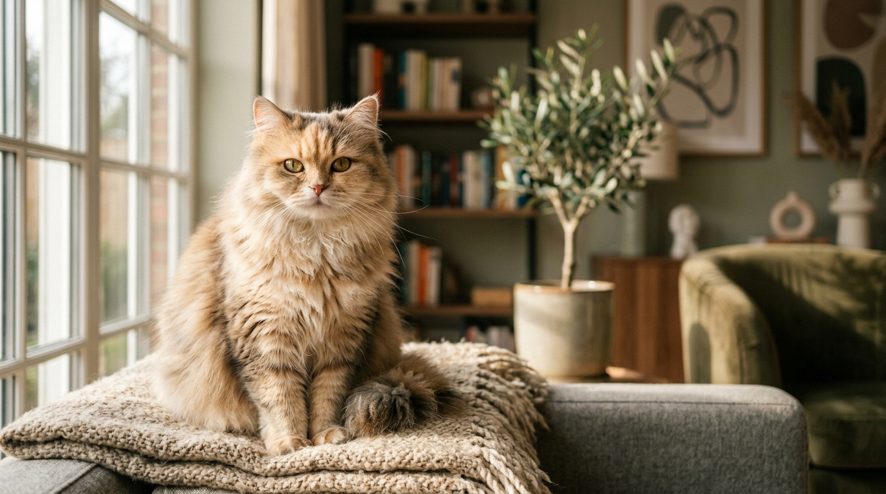

Explore the World of Elegant Felines
Welcome to the ultimate sanctuary for cat enthusiasts. Indulge in relaxing purr soundscapes, test your reflexes with our interactive canvas cat play space, and explore breeds from across the globe.

Meet the Breeds
Cats come in all shapes, sizes, and personalities. Click on a breed to discover its characteristics, history, and secret traits.
Purr Audio Relaxer
Cat purrs are known to lower stress, reduce blood pressure, and aid healing. Customize and experience our real-time synthesized cozy purr generator.
Click to Start Purring
Laser Pointer Chase
Move your cursor inside the play area. A red laser dot will appear, and a curious cat will try to pounce and catch it!
Feline Trivia
Expand your knowledge with surprising and fun facts about our favorite pets.
Did you know? A cat's purr vibrates at a frequency of 20 to 140 Hz, which is known to be medically therapeutic for bone and muscle growth.